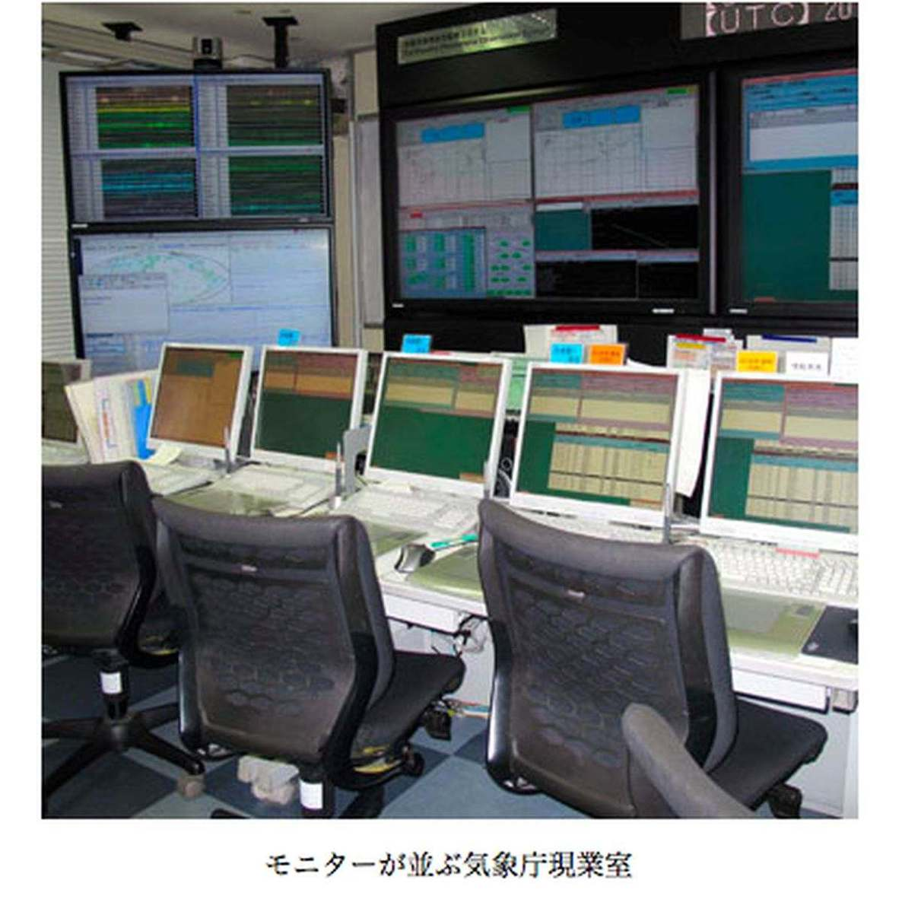
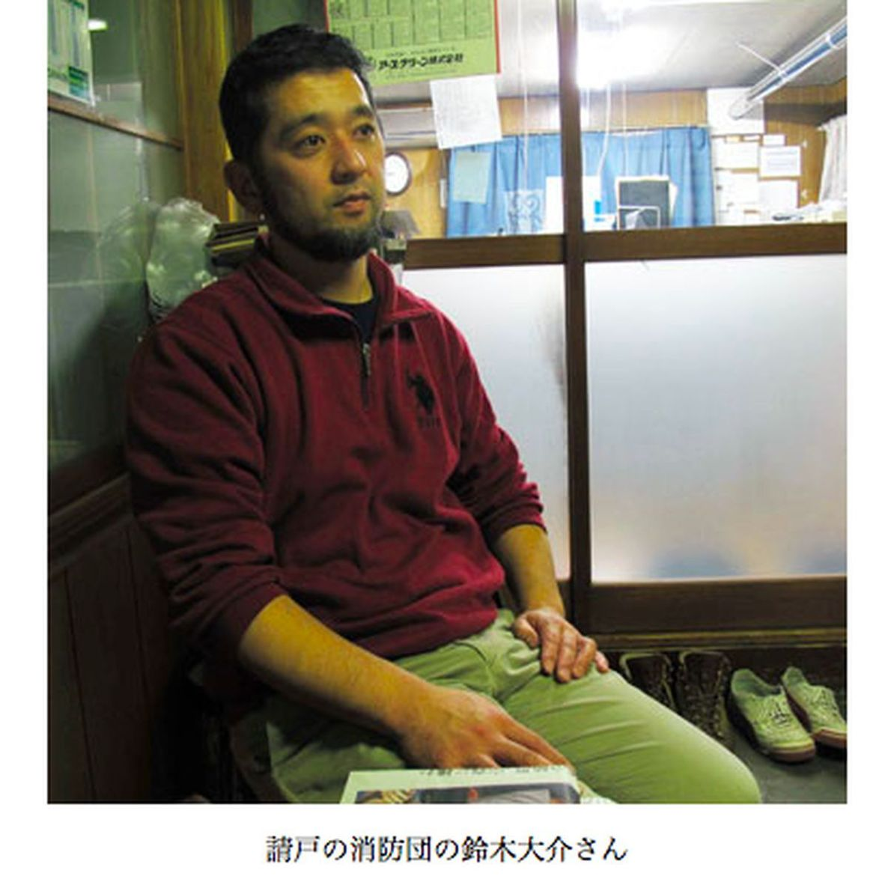

| プロメテウスの罠〔１１〕 遅れた警報「助かる人 死なせた」 (朝日新聞デジタルＳＥＬＥＣＴ) | |
| 朝日新聞 | |
| (2013) | |
２０１１年３月１１日、大地震の直後。気象庁はなぜ、津波の予測値を低いまま伝えたのか。その判断ミス、後手後手にまわった警報は、福島第１原発や被災地の住民の対応・判断にどんな影響を及ぼしたのか。そして原発事故による放射性物質の拡散――。一事が万事、取り返しのつかない多くの犠牲者を生んだ経緯を追い、気象庁の津波警報責任者、東電の従業員、浪江町の消防署員、住民ら当事者の証言をもとに、助けられたはずの死者への無念を増大させた２つの「人災」の理不尽を検証する。
内容紹介
２０１１年３月１１日、大地震の直後。気象庁はなぜ、津波の予測値を低いまま伝えたのか。その判断ミス、後手後手にまわった警報は、福島第１原発や被災地の住民の対応・判断にどんな影響を及ぼしたのか。そして原発事故による放射性物質の拡散――。一事が万事、取り返しのつかない多くの犠牲者を生んだ経緯を追い、気象庁の津波警報責任者、東電の従業員、浪江町の消防署員、住民ら当事者の証言をもとに、助けられたはずの死者への無念を増大させた２つの「人災」の理不尽を検証する。
初出
朝日新聞 二〇一二年五月十一日～五月二十五日
第１章 水圧計は無視された
第２章 ３メートルなら大丈夫だ
第３章 助けた子も流された
第４章 Ｍ７・９への思い込み
第５章 とりあえず、２倍に
第６章 伝わらない「逃げろ」
第７章 車飛び降り、走る
第８章 誰かいっかーっ！
第９章 モニターに異変
第１０章 マニュアルに従った
第１１章 「まだ生きてる人が」
第１２章 捜索できぬまま避難
第１３章 「すまん」泣いた
第１４章 １０日間は生きていた
第１５章 助かる人を死なせた
１１年３月１１日、東京都千代田区の気象庁。
午後２時４６分に地震波をキャッチした直後から、２階の現業室では当番の職員が津波警報を出す作業に取りかかった。
モニター画面に、地震の規模（マグニチュード）と震源から自動計算した津波の高さ予測が並ぶ。
「発表して」。当番の班長が声を出し、予想が発表された。
気象庁が高さ予想の警報を出したのは２時５０分だった。
「岩手３メートル、宮城６メートル、福島３メートル......」
防災無線やテレビ、ラジオはこの数字を直ちに報じ、多くの人がそれを見聞きした。
８分後の２時５８分。モニターが異常なグラフを描いた。岩手県釜石沖７６キロ地点の水圧計が、大きな津波を計測し始めていた。
沖合での津波の高さは、海底に設置した水圧計や、水面のブイで上下変動を測る波浪計で計測する。この水圧計は三陸で最も沖合の水深１６００メートルに設置されていた。
津波の高さを示すグラフの線がみるみる上がり、２分後の午後３時には５メートルに達した。
津波は沿岸に近づくほど大きくなる。気象庁が使っている計算式ではこの水圧計の地点の津波は沿岸で６倍以上になる。５×６、３０メートルもの津波が沿岸を襲う計算になる。
「水圧計が変化しています」
モニター画面を見ていた職員が、室内にいる班長に伝えた。
さらに４分後、２９キロ陸側にある釜石沖４７キロの水圧計も５メートルの津波を観測した。沖合の水圧計が観測した津波が、沿岸に迫っていた。
だが、班長がモニター画面を見に来ることはなく、その情報が警報に生かされることもなかった。
気象庁は津波の高さを主にマグニチュードから予測する。予測に沖合の観測値を使うことは少なく、水圧計の使用はマニュアルになかった。そのため班長は水圧計に目を向けなかったのだ。当時の地震津波監視課長、横山博文（よこやまひろふみ）（５４）は「変動要素が大きいという認識があり、水圧計の使用は考えていなかった」という。
結局、気象庁が３県とも「１０メートル以上」と高さ予想を修正したのは３時３１分。大津波が襲った後だった。
「あのときに水圧計を重視していたら......」。防災関係の研究者らでつくる環境防災総合政策研究機構の理事、岡田弘（おかだひろむ）（６８）がいう。
「死者不明者約１万９千人のうち、１万人が助かったと思います」
地震直後、東京電力は機器の点検や再起動のため、社員を福島第一原発１～３号機の建屋に向かわせた。気象庁の津波予想は高さ３メートルで、各建屋は標高１０メートルの場所にある。建屋まで津波は来ない、と判断した。
腰に重い工具をつけた社員が２人一組で建屋に向かった。
非常灯しかついていない薄暗い中で、懐中電灯を手に、機器のスイッチを入れていく。
「弁を開放します」
「はい、動きました」
突然、非常灯がすべて消えた。暗闇の四方から水が流れ込んだ。社員たちは懸命に水をかきわけて階段を上り、地上に出て走って逃げた。
犠牲となった社員も２人いた。４号機タービン建屋の地下１階に行った第一運転管理部の小久保和彦（こくぼかずひこ）（２４）と寺島祥希（てらしまよしき）（２１）だ。
定期検査中で現場作業員が多かった４号機は、作業員の避難に約３０分かかった。２人はそのあとで地下に行き、命を落とした。貯水タンクの水位表示が下がっており、水漏れの有無を確認する指示を受けていた。
このときの津波の高さを、東電は１３メートルと推定している。
陸地に来ると３０メートルにも達する可能性がある大津波を、沖合７６キロの水圧計が観測した岩手県釜石市。
鵜住居（うのすまい）地区の市川紀吉（いちかわのりよし）（４３）は母のキミ子（７１）と避難した。高台に逃げようという紀吉に、キミ子は「みんな防災センターに行くからそこでいい」という。２階建ての地区防災センターに行き、階段をあがった。センターには１００人以上が避難していた。気象庁が発した津波の予想は岩手も３メートル。それを聞き、「２階なら大丈夫」と集まった人たちがたくさんいた。
古川悌三（ふるかわていぞう）（７３）は鵜住居の自宅で「３メートルの津波」を報じる防災無線を聞いた。近所に避難を呼びかけて回った後、センターに。２階に駆けあがったとき津波がきた。水にはじき飛ばされ、水中でもがきながら無我夢中で何かのコードにつかまった。
２階の天井近くまで水がきたのはあっという間だった。母と一緒に避難した市川の体は水流で横になった。母を右腕に抱えていたが、流れてきたテーブルが母と自分の間にはさまって母の体を起こせない。
何度も水を飲んだ。真っ黒な水だったが、じゃりじゃりはせず、さらっとしていた。力が尽きていった。
１１年３月１１日、岩手県釜石市の鵜住居（うのすまい）地区の防災センター。津波は２階建てのセンターをのみこんだ。
２階に避難していた１人、市川紀吉（４３）の話を続ける。
水に没したとき、水中で息を止めた。もう限界だと何度もごっくんと水を飲んだ。２、３分にも感じた。「あーダメだ」と思ったとき、水が引きだした。天井が見えた。近くの水面に、６歳ぐらいの男の子がぷかんと浮かんできた。口から泡を吹いていて、顔が真っ青だった。
「大丈夫か」
男の子は生きていた。うんうんうなずく。市川は水中でつま先立ちしながら左腕で男の子を抱えた。右腕に抱えていた自分の母（７１）は口から泡をふき、息をしていなかった。
近くにいた男性が「その子をこっちへよこせ」といった。男性は、高さ３０センチほどの台の上に子どもたちを集めて乗せていた。
「ゆうちゃん、ゆうちゃん！」
３０代の女性が自分の子を捜して叫んでいる。母を床に横たえ、一緒に捜した。別の高齢者が倒れていた。
「２回目来たぞー！」
声がした。再び水が流れ込んできた。市川は棚の上に乗り、天井とのわずかな隙間で息を吸った。
水が引いていった。子どもを捜していた女性も、台の上に乗せられた子どもたちの姿も見えなかった。
「地獄だった。死に向かって進んでいく感じだった」
３日間、飲まず食わずで眠らずに救助を待った。寒かった。
センターの生存者は２６人だった。のちにセンターとその周辺で６８人の遺体が発見された。外に流された人もおり、正確には何人がセンターで犠牲になったのか分からない。
市川は「正確な津波情報がほしかった」と話す。気象庁が地震４分後に発表した津波の高さ予想は、岩手と福島に３メートル、宮城に６メートル。その１０分後、釜石沖７６キロの水圧計は５メートルの津波を観測していた。気象庁が使う計算式では、沿岸に達したときに３０メートルの高さになる。
データは、釜石市の馬田（まだ）岬近くにある東大地震研究所の送信施設を経て瞬時に気象庁へ届いた。その１８分後、送信施設が津波に破壊された。施設の隣には訪れる研究者を世話してくれる夫婦が住んでいたが、夫婦はいまも行方不明のままだ。
東大地震研の酒井慎一（４８）は、送信施設を襲った津波の高さが約３０メートルだったことを現地で確認した。計算式の通りだった。
もう一度、１１年３月１１日の気象庁現業室に話を戻す。
午後２時４６分４５・６秒。アラーム音と女性の自動音声が流れた。
「緊急地震速報、地震情報を送信しました」
５・４秒前に宮城県石巻の地震計が初期微動のＰ波をキャッチ、速報を気象予報業者などへ自動発信したのだ。当番班の６人全員が立ち上がり、大型スクリーン前に集まった。
日本地図に震源が赤い×で記されている。宮城県沖だ。地震の規模を表すＭ（マグニチュード）が頻繁に更新されていった。当初４・３だったＭは３秒後に７を超えた。
２時４６分４８・８秒。報道機関や電話各社にも緊急地震速報が出された。対象は震度４以上が予想される岩手、宮城、福島、秋田、山形。
中央の班長席で、当番の班長が黒いマイクを手に取った。
「大地震が起動」
このマイクは各管区気象台の現業室とつながっている。班長は大阪管区気象台にもＭ値と震源の確定作業に取りかかるよう指示した。津波警報を出すにはそれらの数値を確定しなければならない。東京と大阪がそれぞれ計算し、班長が決める。
職員が小型モニターに電子ペンをあてた。地震波の到達時刻や最大の振れ幅を読み取るためだ。
そのとき、気象庁も揺れ出した。
ペンを持つ手が揺れて作業ができない。同僚が両肩を押さえて職員の体を固定し、作業を続けた。
気象庁の震度は５強だった。班長も自席のモニターを押さえた。
気象庁には３分以内に津波警報を出すという自主目標があった。１９９３年の北海道南西沖地震で地震の３分後に津波が襲い、警報が間に合わなかったためだ。
職員が測った波形からマグニチュードは７・８、震源は宮城県沖のもっと沖、三陸沖と計算した。大阪はＭ７・９を出した。
班長がマイクで「７・９で決定です」と告げた。
すぐに大津波警報を発表し、１分後の２時５０分にはＭ値から自動計算した津波の高さ予想＝岩手、福島３メートル、宮城６メートルを発表した。
政府の地震調査委員会が想定した宮城県沖地震の連動型はＭ８。班長はそれが起きたと考えた。
のちに明らかになった実際のＭ値は９・０。現実の津波と予想とが隔たった原因の一つは、「宮城県沖の連動型だから７・９で合っている」という思い込みだった。

東京での揺れのピークは午後２時４９分だった。
揺れ続ける中、気象庁の地震津波監視課長、横山博文（５４）は７階の自席を立ち、階段を駆け下りて２階の現業室に向かった。横山は警報発表の責任者だった。
現業室の白いドアを開けると、アラーム音や自動音声がいっせいに耳に飛び込んできた。
既にマグニチュード（Ｍ）が算出されていた。部屋の誰かから「Ｍ７・９で東北３県に大津波警報を発表した」と報告を受けた。
慌ただしかった。岩手県釜石沖７６キロの水圧計が大きな津波を観測し始めたのが２時５８分。５９分、モニターを監視している仙台管区気象台の職員が沿岸で小さな波の変化が観測されたのを見つけ、それを発表した。
３時すぎ。当番班長がマイクを握り、「ＧＰＳよく見てて」と指示をした。マニュアルには「沖合観測は全地球測位システム（ＧＰＳ）波浪計などを使う」とあり、津波警報にはＧＰＳ波浪計を使っていた。
ちょうどその時、沖合１０～２０キロのＧＰＳ波浪計が次々と津波を観測しはじめた。モニターに表示される津波の高さが徐々に上がる。
マニュアルによると、２・５メートル以上なら沿岸での高さは１０メートル以上。
３時７分すぎ、釜石沖のＧＰＳ波浪計が２メートルの津波を観測した。さらに急上昇していく。
「上がった！」
悲鳴に近い声がスピーカーから飛び出した。声の主は仙台管区気象台だった。気象庁現業室でも同じような声が飛び交った。
３時９分、２・５メートルを超えた。１分間に１メートル上がる勢いでまだまだ上がる。岩手・宮城県境の広田湾沖、岩手県宮古沖のＧＰＳ波浪計も上がってきた。３時１２分、釜石沖の数値は６・７メートル、宮古沖が６・３メートル。
班長は横山に承認を求めた。「とりあえず倍にします」「わかった」
３時１４分、「岩手、福島が６メートル、宮城が１０メートル以上」と津波の予想を引き上げた。波浪計の値に従うと岩手でも「１０メートル以上」となるが、横山らの判断は「とりあえず倍」だった。
その３０分前、福島県浪江町の請戸地区消防団員、鈴木大介（すずきだいすけ）（３９）は、自分が専務を務める酒造会社で、原酒のタンクに井戸水を入れていた。無事に仕込みが終わったことを祝う「甑（こしき）倒し」をする予定だった。
突然、重い地鳴りがした。いままで聞いたこともない長い地鳴りだった。
浪江町請戸の消防団員、鈴木大介（３９）は、大きな地鳴りを聞いて自分の酒蔵から飛び出した。
外に出た途端、地面が揺れ始めた。時間がたっても収まるどころか、どんどん強くなる。木造平屋の母屋の瓦屋根が揺れ、瓦の重さに耐えかねたように家が倒れた。
津波が頭に浮かんだ。海の様子を見ようと堤防に上がった。潮が引いている。港の海底の砂が見えた。
蔵に戻ると、弟が血相を変えて車から降りてきた。
「ラジオで津波警報が出てる。３メートルの津波が来るって」
「それなら倉庫の上にいれば大丈夫だな。おれ、ここにいるわ」
意地でも蔵を離れたくなかった。５カ月間の仕込みがようやく終わったというのに。倉庫はコンクリート造りで、屋上は高さ５メートルある。
間もなくドーンとすごい音がした。沖の堤防の方だ。波が堤防に当たった音だろうか。
これ、津波かな。まずいな。
蔵に残ろうという気持ちを捨てた。出動しなければ。
「消防のポンプ車とすれ違うはずだから、そこで降ろしてくれ」
弟の車に乗り込んだ。直前、近所に住む宮司の鈴木澄夫（すずきすみお）（７２）がヘッドホンでラジオを聞きながら小刻みに歩いているのが見えた。
「澄夫さんも逃げなきゃだぞ！」
澄夫はうなずいた。
すぐにポンプ車とすれ違い、乗り込んだ。機関長の荒川勝己（あらかわかつみ）（３８）と副機関長の２人が乗っていた。
道すがら、６０代の夫婦が自宅の家の庭に立っているのが見えた。周囲の様子をうかがっているようだ。２歳年上の先輩の両親だった。
「津波です、逃げてください」
「いいからいいから」
津波を深刻にはとらえていない、そんな様子に見えた。
ポンプ車を運転する荒川も、海が５０メートル後退しているのを目撃していた。「大っきい津波が来る」と呼びかけ回ったが、「大っきいのは来ない」と言われる雰囲気だった。
潮が引いたのをこの目で見ているだけに、鈴木らは大津波が来ると思って訴えている。が、その思いはなかなか住民に伝わらなかった。
鈴木は荒川に言った。
「勝己、逃げ遅れる人が出るぞ。２台で回ろう。自分の車出せ」
二手に分かれ、荒川は自分の軽ワゴン車に乗り換えた。
午後３時１４分、福島の津波予想は６メートルに変わった。

避難を呼びかけて回る浪江町請戸の鈴木大介（３９）の目に、同じ消防団員の渡辺潤也（わたなべじゅんや）（３６）が住民に避難を訴えているのが映った。手を振って合図を交わした。
鈴木は海から２００メートル地点の丁字路で、海の方向に向かう車と遭遇した。若い夫婦が乗っていた。
「託児所に子どもを迎えに行くんです」
「津波来るからだめだ。もうみんな逃げてるはずだ」
そのとき、海側の道から高さ１メートルの波が寄せてきた。夫婦は引き返した。母親は泣いていた。
鈴木も引き返し、山へ向かう道路で避難を誘導した。
５分ほどして、南東にある請戸小学校の真東で高い波が上がって崩れるのが見えた。高さ十数メートルの松林が簡単に倒れていく。スマトラ沖地震の津波の映像が脳裏をよぎった。
波は意外に速く、家の固まりをいくつも乗せて流れていく。津波の行き先を目で追っていたら、南側からも津波が迫っているのが見えた。
逃げ道がなくなる！
山へ向かおうとしたが、避難する車で渋滞している。もう間に合わない。ポンプ車を乗り捨てた。
渋滞に並ぶ車の窓をどんどんたたいて注意を促しながら走る。たたいても中でのんびりとあめをなめているおばあちゃんと孫がいた。車列に知人のトラックが見えた。乗れと言っている。荷台に飛び乗った。
飛び乗って、ごろごろ転がったときに、後ろが見えた。
５００メートルほど後ろに小さな人影が二つ。避難を促したとき、「いいからいいから」といった先輩の両親だった。ほかにも４、５人見えた。
波の行き先に目を転じると、追われるようにシルバーの軽ワゴン車が走っていた。時速８０キロほどの猛スピードで、田んぼ道を走っている。荒川勝己の軽ワゴン車だった。やがて鈴木の視界から消えた。
「助かれよ」
鈴木は祈った。
後方を走る人影の真後ろと左側にも津波が迫っていた。波の上に住宅が折り重なり、めりめりと木くずになりながら突き進んでいた。
自分も危ない。鈴木はトラックの荷台から飛びおり、内陸側の山に向かって一目散に走った。
枯れ草に覆われた山を必死で登った。中腹で振り返ると、田んぼや住宅地はなくなり、海のようになっていた。「ちくしょう」。悔しさでいっぱいだった。
鈴木大介（３９）が逃げ込んだ山の下は、流れてきたがれきで埋まっていた。住宅や車の残骸。鳴りっぱなしのクラクション。
「誰かいるかあっ！」
「......ここにいます」
小さい声がし、泥の中から学生服の少年が起き上がった。背は自分と同じ１７０センチ。知人の息子の中学生だ。全身泥だらけ。靴も脱げ、よろよろしていた。歩けそうにない。
「おぶされ」
体は重く、何度か休みながらゆっくり山を登った。
山の中腹に着いたところで「大ちゃん！」と呼ばれた。この声。団の法被姿。荒川勝己（３８）だった。
荒川は津波から逃げきっていた。
鈴木と別行動になった後、荒川は高齢者を軽ワゴン車で内陸に運び、再び海の近くに戻った。津波で川になった道路で大学生が流されていた。一緒にいた消防仲間の渡辺潤也（３６）と大学生を引きあげた。
水がきて近くの車をのみ込んだ。慌てて山手に曲がると、知り合いのおばあちゃんが立っていた。
「２階なら大丈夫だろうって、じいちゃんと孫が家にいるんだわ」
津波が迫っていた。
「もうだめだ、ばあちゃん乗れ」
車に押し込み、走った。
道路は渋滞だった。真っ黒な津波が左と後ろから迫ってくる。新築２年の知り合いの家が、あっけなく崩れて流されていった。
残るは南側の田んぼ道しかない。道幅が１台分ぎりぎりで、雨が降るとどろどろになる。が、雨は数日降っていない。田んぼ道に突っ込み、走った。前だけを見て、時速８０キロで走り抜けた。津波から逃げ切って２人を降ろし、引き返した。
故郷が一変していた。さっきまであった家々が消えている。ゴーという海鳴りが激しかった。
「誰かいっかーっ！」
応じるように、助けてー、と小さな声が聞こえた。がれきに埋もれた車からだった。近所のおばあちゃんと義理の娘が閉じ込められていた。車の窓から２人を引っ張りあげた。
鈴木には悔しさがある。
「あんなに高い津波が来るって分かっていれば、みんなも逃げてくれただろうに」
鈴木や荒川ら浪江町の消防団員が避難を呼びかけた人々が何人も犠牲になった。鈴木の先輩の両親。宮司の鈴木澄夫（７２）。大学生を助けた消防団員の渡辺も津波にのまれ、見つかっていない。
気象庁は午後３時１４分に津波予想を「とりあえず倍」とした。岩手、福島６メートル、宮城１０メートル以上。
岩手県釜石市の２０キロ沖にあるＧＰＳ波浪計は４分前の３時１０分に３メートルを超え、３時１２分には６・７メートルに達していた。
２０キロ沖のＧＰＳ波浪計で２・５メートル以上を観測すると、気象庁が使っている換算表では沿岸で１０メートル以上になる。なぜ「とりあえず倍」にしたのか。地震津波監視課長だった横山博文（よこやまひろふみ）（５４）は「東北３県以外も上げなければならなかったのでシンプルで一番簡単な方法」にした。それが倍だった、と説明する。
気象庁２階の現業室では、当番の班長らが大型モニターを見つめた。
岩手、宮城、福島で気象庁が監視している水圧計やＧＰＳ波浪計、潮位計は１６カ所ある。それらがどんどん津波の最大値を更新していた。
班長は、警報をさらに切り上げなければならないと思った。しかし何時何分時点のデータで、どの地域の警報をどう切り上げるか。更新され続ける桁違いのデータに判断が追いつかない。
と、モニターに異変が起こり始めた。３時１５分、測定値がはね上がったまま、グラフの線が次々と横一直線になってしまったのだ。
地震直後から送信不能だった宮城県金華山沖のＧＰＳ波浪計を除く、すべてのＧＰＳ波浪計がこの時点でダウンした。仙台市に置かれた送信用サーバーの電源切れが原因だと考えられている。
３分後。釜石沖の二つの水圧計データも横まっすぐになった。
３県の海岸５カ所には水圧で測る巨大津波観測計が設置されていた。２０メートルの津波まで観測できるはずだったのだが、５～７メートルを観測したところで次々とデータが切れた。３時２１分までに、福島県相馬を除く４カ所の巨大津波観測計がダウンした。
そのころ現業室でざわめきが起こった。ＮＨＫテレビに釜石の映像が映っている。車や家が流れていた。
「すごいことになってるぞ」
警報は課長が承認して発表される。横山に班長が言った。
「１０メートル以上にします」
午後３時３１分、気象庁は岩手～千葉の太平洋側を最大値の「１０メートル以上」に切り上げた。
そのとき、多くの街がすでに大津波に襲われていた。
震災モニュメントとなった岩手県山田町の被災大時計は午後３時２７分で止まっている。
大津波が岩手県釜石に到達する約２０分前に津波を観測した釜石沖の水圧計は、２００３年の十勝沖地震や１０年のチリ地震でも津波を捉えていた。
この水圧計は東大の地震研究所が設置したものだ。同研究所の地震火山情報センター長、佐竹健治（さたけけんじ）（５３）は「水圧計の有用性は国内外の学者が１０年以上前から指摘しており、早く警報に使ってもらいたかった。今回は７６キロ沖の水圧計が５メートルの津波を観測した４分後に２９キロ陸側でも５メートルを観測したのだから、沿岸に大津波が向かっていることは明らか」と話す。気象庁が使う計算式では、沖の５メートルは沿岸で３０メートルになる。
津波警報の責任者は、気象庁の地震津波監視課長だ。当時の課長、横山博文（５４）は１１年５月から鹿児島地方気象台長に就いている。
――なぜ水圧計を警報に生かさなかったのですか。
「震源域近くの水圧計が観測した津波が計算式通りに沿岸で高くなるかどうかはわからない、だから水圧計は使いにくいという認識でした」
――観測したのが１地点ならともかく、今回は７６キロ沖と４７キロ沖の２点で観測されていました。２点とも５メートルなら沿岸に大津波が来るのは確実、と研究者は話しています。
「私にはそれはわからない」
――３メートルの津波、と思って逃げなかった人たちがいます。
「申し訳ないと思います」
――マニュアルに従っていた？
「そうです。結果が間違っていたとしたらマニュアルが間違っていたということです」
気象庁の検証文書には、以下の反省点が列記されている。
「水圧計を生かせなかった」「当初のマグニチュードが低すぎたことに気づかなかった」「警報切り上げにも時間を要した」
１２年３月９日には警報に水圧計を生かすよう改めた。水圧計が１・５メートル以上を観測すれば、すぐに「１０メートル以上」の警報を出すように。
横山の後任の永井章（ながいあきら）（５６）はいう。「警報が３メートルと低かったために少なからぬ人が避難しなかったのは事実です。もっといい方法があったのではないかと悩んでいる職員もいます。マニュアルを改善します」
これに対し、環境防災総合政策研究機構の岡田弘（６８）は厳しい。
「マニュアル通りなら民間に任せればすむ。マニュアルに頼らず判断できる専門家が気象庁にいないことこそ問題なのです」
１１年３月１１日、午後８時すぎだった。福島県浪江町消防団の鈴木大介（３９）や荒川勝己（３８）らが命がけの救助活動をしたあと、同じ団の高野仁久（たかのきみひさ）（５０）は、懐中電灯をつけて津波の被災地を見回っていた。
国道に近い川の土手。いつもなら国道を通るトラックの音がうるさいが、その音がない。波が打ちつける音もするはずだ。それもない。真っ暗な静寂。不気味だった。
懐中電灯の光の輪の中に、流れてきた木片の山やビニールハウスが浮かんでくる。
高野は浪江町消防団のナンバー３、訓練分団長を務めている。津波の現場は二次災害の危険があるため、立ち入るなといわれていた。
もう生きている人はいないかもしれないと思いながら、それでも現場を見ておきたかった。
軽トラックで屯所３カ所を激励して回ったあと、立ち入り禁止のゲートをくぐって現場に入っていた。
遠くに赤色灯が見えた。双葉地方消防本部のタンク車だった。消防隊が救助活動をしているのなら、この辺りにも救助を待っている人がいるかもしれない。
「誰かいるかあーっ！」
腹に力を込めて叫んだ。静寂の中、声は遠くまで響いた。
耳をすませる。
ウーともアーともつかない、か細いうめき声が聞こえた。
「誰かいるのか！」
再びうめき声。
どこから聞こえてくるのか分からない。一帯ががれきで、真っ暗だ。５０メートル先なのか、１００メートルなのかもわからなかった。
懐中電灯で辺りを照らしたが、津波で流されたクレーン車や乗用車、プレハブなどが見えるだけだ。
「どこだーっ！」
トンと音がした。
「どこだ！」
今度はトントン、と２回。
どこかに、誰かがいる。右手を伸ばして懐中電灯で遠くまで照らしても、５メートルほど先のがれきが見えるだけだ。１人ではどうしようもない。
「助けに来っから、待ってろ！」
急いで軽トラックに乗り込み土手を引き返した。町災害対策本部がある役場まで５分。団長に報告した。
「まだ生きてる人がいる」
高野仁久（きみひさ）（５０）が浪江町役場に駆け込んだとき、役場には４人の消防団幹部がいた。団長は高野の報告を町災害対策本部に上げた。
町役場は津波から避難してきた人であふれていた。
判断の結果は、明朝を待っての捜索だった。水が引かない暗闇の中で救助作業をしては、二次災害のおそれがある。翌１１年３月１２日の朝７時、消防団が救助に向かうことに決めた。
そのころ、「双葉町の山の上にある諏訪神社で浪江と双葉の人が５０人ほど取り残されている」という情報が入っていた。
高野は救出隊に加わった。自衛隊と消防署員、消防団員、役場職員で助けに向かった。
津波で海側からは入れず、山側から回る。神社は石段が流され、人々は境内でたき火をして暖をとっていた。高齢者や母子が寒さに震えている。高齢者の手を引いたり、おぶったりして、３度ほどピストン輸送した。役所に帰ってきたのは午前３時３０分になっていた。
翌朝は救助活動を控えている。
消防団の幹部５人は役場１階で「休むべ」と声をかけあった。が、休む者は誰もいなかった。
午前５時、突然役場が騒がしくなった。「原発がおかしいらしい」
午前５時４０分すぎ、テレビで原発から１０キロ圏内の避難指示が流れた。午前６時すぎから町災害対策本部の会議が開かれた。
浪江町役場は原発から８キロの場所にある。災対本部長である馬場有町長が、消防団は捜索をやめて町民の避難誘導をするという決定をした。
高野はショックを受けた。
双眼鏡を手に、４階建て庁舎の屋上に上った。
この日の日の出は午前５時５３分。
湖のようになった沿岸地区を、朝日がまばゆく照らしていた。
あそこだ。あそこに声をきいた人がいるはずだ。
人の姿が見えないか、目をこらす。車で行けばわずか５分の地点。直線距離で２キロ。太陽の光が水に反射して識別できなかった。まるで水を張った田んぼのようだ。
「人が、いるんだろうな」
思わず口にした。
今助けにいかないと。見殺しだ、という思いがよぎった。
でも原発がいつ爆発するかわからない。自分たちだって、住民の避難が終わらないと避難できない。
これで自分たちも終わりなんだろうな、と思った。

１１年３月１２日朝、浪江町消防団の高野仁久（きみひさ）（５０）は気持ちを切り替えた。原発が爆発するかもしれない。１秒でも早く住民を逃がそうと決めた。
着の身着のまま避難して震えている人たちにカイロを渡す。おにぎりやパンを「持ってけ」と配る。避難先は、原発から約１２キロ離れた苅野小学校。そこに向かうバスを用意し、住民をバスに誘導した。
避難者の食べ物を確保するため、高野たち消防団員は大釜とガスボンベ、コンロ、みそとコメ、野菜、長テーブルを軽トラック３台に積んで苅野小に向かった。
午後、近くのグラウンドに大釜を置いてご飯を炊いた。１０人ほどの消防団員が、ラップを手のひらに広げておにぎりを握る。前日から何も食べていない避難者が大勢いた。
ボンッ！
午後３時３６分、激しい音がし、空気が震えた。映画でガソリンスタンドが爆発するシーンを見たことがあるが、そのときのような音だった。
南東に楕円（だえん）形の白い噴煙があがっていた。原発の方向だ。
１号機の爆発だった。
「ああ、もうだめだ」と思った。
不思議さも感じた。高い放射能が今、まき散らされているというのに、目に見えない。火事や津波のような恐怖を感じないのだ。
「まだご飯炊いている途中だから、炊きあがるまでいるべ」
そんなことをいっていると、パトカーがやってきた。スピーカーで何か叫んでいる。耳をすますと「屋内に逃げろ！」といっていた。
団員たちと体育館に入った。
３時間後、原発から２０キロ圏外への避難指示が出た。今度は津島地区に避難した。１１年３月１４日、３号機が爆発した。３月１５日、二本松市に移った。
４月、避難所となっている猪苗代町の温泉旅館に移った。露天風呂だった。久しぶりに落ち着いて風呂に入った。午後１０時すぎでほかに人はいない。明るい月が出ていた。
あの月の下に見殺しにした人がいる。涙が出てきた。人目を気にする必要はない。泣いた。手を合わせ、「すまんかった」と謝った。
浪江町の原発１０キロ圏内に福島県警の捜索隊が入ったのは、津波から１カ月がたった１１年４月１４日だった。
高野が助けを求める音を聞いた一帯から、遺体が多く見つかった。
「あのとき、『助けに行こう』ともっと強くいえばよかった。朝まで捜索していれば、１人でも２人でも助けられたんだ」
大震災から１週間後の１１年３月１８日、福島市の石田賢次（いしだけんじ）（４５）はいらいらしていた。
父（７５）と母（７２）は、原発から４キロの双葉町に２人で住む。駆けつけようにも震災翌日の早朝から原発１０キロ圏内に避難指示が出ていて入れない。地震後、ずっと連絡がとれない状態が続いているのだ。
避難所１０カ所近くに問い合わせてみたがいない。地元ラジオ局で呼びかけてもらったが反応はない。
俺が助けに行くのを待っているに違いない。「人の命にかかわる」といえば入れるのではないか。
だが、周囲からは「小さい子どもがいるのに、お前に何かあったらどうするんだ」と止められた。
父、次雄（つぎお）は建具職人。シルバー人材センターで障子張りに定評があった。職人気質で無口。酒好きで酒が入ると陽気になる。
母のアイ子は近所づきあいが好き。自宅の畑でカボチャやトウモロコシを作っており、近所の人に配ったりしていた。
翌年は金婚式だ。孫も集まって盛大にやろうと姉たちと話していた。どこかに泊まるのもいいな、と。
自衛隊に頼もう。じりじりと休日明けを待ち、１１年３月２２日に役場に電話した。
「うちの親を見に行ってもらえるよう、自衛隊に頼んでもらえないでしょうか」
翌３月２３日、役場から電話があった。
「２人の遺体がありました」
自宅は津波に襲われていた。現場は津波でぬかるみ、橋が落ちてすぐには収容できないという。
１１年４月４日夜、双葉署から「遺体を収容しました。確認して引き取っていただけますか」と電話があった。
翌４月５日。南相馬市の高校の体育館で、石田は姉（４９）といっしょに、二つの棺（ひつぎ）と向き合った。ベニヤ板のような薄い木の棺。開けると、グレーの遺体収容袋があった。
チャックを下ろした。黒く、やつれ、変わり果てた父の姿があった。口元が乾いて、半開きで、水を飲みたそうだった。目を見開いていた。苦しそうな表情。何かをつかもうとしていたかのように、右手は少し浮いていた。
父は２階の布団の中で死んでいたと聞かされた。津波は２階まで上がっていなかった。
検案書には「衰弱死」とあった。死亡推定日は１１年３月２１日。１０日間は生きていたということだ。
声が出なかった。姉は泣き崩れた。
津波の１９日後、福島県南相馬市の医師、標葉隆三郎（しねはりゅうざぶろう）（５９）は南相馬署で１人の遺体と向き合っていた。
１１年３月１１日以降、犠牲者の検視をしていた。津波の死者がほとんどだったが、死因不明の遺体もあった。
横たえられた７５歳の男性。自宅の布団の中で見つかったというのに、雨がっぱを着ていた。逃げられず、電気もガスも水道もなく、暖房もつけられずに寒かったのだろう。やせこけ、顔が真っ黒だった。
男性は双葉町の住宅の２階で見つかった。１階は津波で水浸しで妻が水死していたと説明を受けた。
両手を合わせ、目を閉じる。
警察官が服を脱がしていく。
全身が黒っぽかった。肉が落ち、骨と皮だ。腹は極端にへこみ、体はひからびていた。外傷はない。
ああ、ひどいな。
警察の話では、もともと体重は６０キロあった。しかし遺体は３８キロ。
部屋にはコーラと酒の空き瓶が転がっていたとも聞いた。寒く、食べ物もなく、独りで死んだ。
餓死だ。そう思った。
６０キロの人が３８キロになるには、１０日はかかるとされている。標葉は、死亡推定日を１１年３月２１日、死因を衰弱死とした。男性の名は石田次雄（いしだつぎお）だった。
ほかにも４体、石田と同じく原発避難区域内で見つかった６０～７０代の衰弱死の遺体を検視した。富岡町の６０代の女性は、こたつの中でやせこけた状態で見つかった。足が不自由で、１人では逃げられなかった。
大熊町の男性（６３）は駐車場でガス欠の車のそばで倒れていた。男女２人はそれぞれ自宅で見つかった。
「津波だけなら助かったのです」と標葉はいう。「助かる人を死なせたのは、原発事故です。行政も東電も、責任を感じてほしい。１年後のいま、私がこうやって話すのは鎮魂のためなんです。悼（いた）まれることなく亡くなった人たちへの鎮魂です」
現在いわき市に住む石田次雄の長男、賢次（けんじ）（４５）は、１１年６月に実家に一時帰宅した。父が見つかった離れの２階。枕元に２・７リットルのペットボトルを見つけた。果実酒らしきものが６分の１ほど残っていた。
母は果実酒造りが趣味だった。父が最後に命をつないでいたのは、母の果実酒だったのだろうか。
賢次は今でも悔やむ。
「原発事故がなければ、父だけでも助けられたのに」
（＝敬称略）
※故人は当時の年齢にしています。
プロメテウスの罠〔１１〕 遅れた警報「助かる人 死なせた」
著 者 朝日新聞（青木美希）
発行所 朝日新聞社
〒１０４―８０１１ 東京都中央区築地５―３―２
http://www.asahi.com/
発売所 朝日新聞社デジタル本部
〒１０４―８０１１ 東京都中央区築地５―３―２
http://www.asahi.com
２０１２年７月１３日 ＷＥＢ新書版発行
２０１３年１１月３０日 ＥＰＵＢ版発行
©2012 The Asahi Shimbun Company
All rights reserved. No reproduction or republication without written permission.
ISBN 978-4-90712-560-8
〈ご注意〉本コンテンツは、購入者個人の閲覧目的のためのものです。私的範囲を越える利用・譲渡などは禁止します。
〈おことわり〉本コンテンツは２０１２年７月１３日に刊行されたＷＥＢ新書版を底本としました。ＥＰＵＢ版の刊行にともない、体裁や表記を直した場合があります。 企業、組織などの名称、人物の役職、肩書等はいずれも記事初出当時のものです。